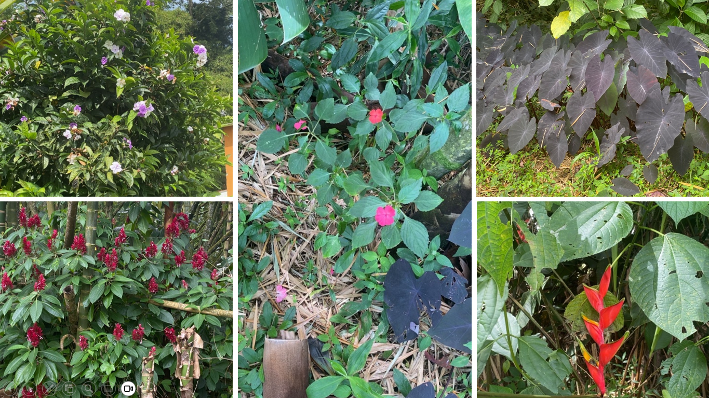

¿Qué son los metabolitos secundarios?
Los metabolitos secundarios son compuestos orgánicos producidos por las plantas que no participan directamente en los procesos vitales básicos del metabolismo primario, como la fotosíntesis o la respiración. A diferencia de estos, su ausencia no resulta letal para la planta, pero sí afecta su capacidad de adaptación al entorno. Se sintetizan en pequeñas cantidades y su presencia suele ser específica de determinadas especies o grupos vegetales. Aunque no cumplen funciones de subsistencia inmediata, son esenciales para la supervivencia a largo plazo, ya que permiten a las plantas responder a condiciones ambientales, interactuar con otros organismos y desarrollar mecanismos de defensa
Familias Orgánicas Involucradas
Los metabolitos secundarios se clasifican según su estructura química en distintas familias orgánicas, cada una con características específicas:
Alcaloides: Compuestos nitrogenados de carácter básico, con estructuras complejas.
Flavonoides: Polifenoles con estructura de tres anillos aromáticos (C6–C3–C6).
Terpenos: Hidrocarburos formados por unidades repetidas de isopreno (C₅H₈).
Taninos: Polifenoles de alto peso molecular con múltiples grupos hidroxilo.
Ácidos fenólicos: Derivados aromáticos con grupo carboxilo y uno o más hidroxilos.
Aceites esenciales: Mezclas de compuestos volátiles, principalmente terpenos oxigenados.
Estas familias se diferencian por la presencia de grupos funcionales (amina, hidroxilo, carbonilo, entre otros), los cuales determinan sus propiedades químicas, su reactividad y su función dentro de la planta.

Funciones ecológicas según su familia orgánica
La función de los metabolitos secundarios está estrechamente relacionada con su estructura química, ya que los grupos funcionales y la organización molecular determinan su actividad biológica. Los alcaloides, por su contenido de nitrógeno, actúan como defensa al afectar el sistema nervioso de los herbívoros. Los flavonoides, con anillos aromáticos conjugados, funcionan como pigmentos, antioxidantes y protectores frente a la radiación UV. Los terpenos, derivados del isopreno, producen olores que permiten atraer polinizadores o repeler depredadores. Los taninos, ricos en grupos hidroxilo, generan efectos astringentes que dificultan la digestión en herbívoros, mientras que los ácidos fenólicos actúan como defensa química y protección frente a microorganismos y radiación. Por su parte, los aceites esenciales intervienen en la comunicación entre plantas y en mecanismos de defensa indirecta.
En conjunto, estos compuestos evidencian que la estructura química define su función ecológica, permitiendo a las plantas adaptarse e interactuar con su entorno.

Nuestros Objetivos
El objetivo general de este proyecto es construir un mapa químico del sendero ecológico del Colegio Salesiano San Juan Bosco, estableciendo la relación entre las especies vegetales presentes, los metabolitos secundarios que producen, sus estructuras químicas y sus funciones biológicas y ecológicas, integrando así la química orgánica con el entorno natural.
En cuanto a los objetivos específicos, se busca analizar la relación entre la estructura química y la función biológica de los metabolitos secundarios, así como identificarlos y clasificarlos según sus familias orgánicas. También se pretende comprender su papel en la defensa, adaptación e interacción con el entorno, relacionando estos conceptos con la observación en el sendero ecológico y promoviendo su valoración como espacio de aprendizaje científico y ambiental.

Problema de investigación
El presente proyecto se fundamenta en la pregunta: ¿Qué metabolitos secundarios producen las especies vegetales presentes en el sendero ecológico del colegio y cómo se relacionan sus estructuras químicas con su función biológica y ecológica? Esta surge a partir de la observación de que, aunque el entorno escolar cuenta con una importante diversidad vegetal, su estudio suele ser superficial, sin profundizar en los procesos químicos que explican su adaptación e interacción con el ambiente. El problema radica en la desconexión entre la química orgánica y su aplicación en contextos reales. Por ello, se propone analizar los metabolitos secundarios desde la relación entre su estructura química y su función ecológica, con el fin de comprender su papel en la defensa, adaptación e interacción de las plantas, y así fortalecer el valor del entorno como espacio de aprendizaje científico.

Metodología
La investigación se desarrolló con un enfoque principalmente observacional e investigativo, combinando trabajo de campo en el sendero ecológico del Colegio Salesiano San Juan Bosco con la consulta de fuentes científicas confiables. En este espacio se seleccionaron cinco especies vegetales representativas (Colocasia esculenta, Impatiens walleriana, Megaskepasma erythrochlamys, Heliconia y Brunfelsia), elegidas por sus características visibles y su facilidad de identificación, con el fin de analizarlas desde la química orgánica.
Durante el recorrido se realizó un registro fotográfico sistemático de cada especie, apoyado en herramientas tecnológicas como la aplicación PictureThis para su identificación preliminar y posterior verificación mediante literatura especializada. A partir de esto, se investigaron sus metabolitos secundarios, relacionándolos con su clasificación taxonómica, sus familias orgánicas, grupos funcionales y la relación entre su estructura química y su función biológica y ecológica.
Finalmente, la información obtenida se organizó en fichas científicas digitales que integran datos de cada especie, sus metabolitos y estructuras químicas, junto con sus funciones. Como producto final, se elaboró un mapa químico interactivo del sendero ecológico, que ubica cada planta y permite acceder a su información mediante códigos QR, facilitando su uso educativo y la divulgación del conocimiento.
